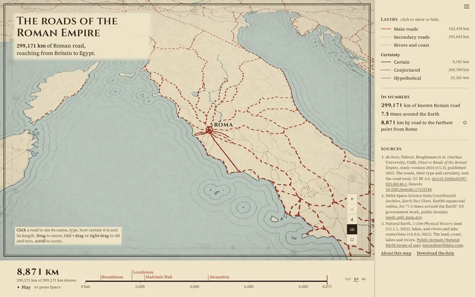
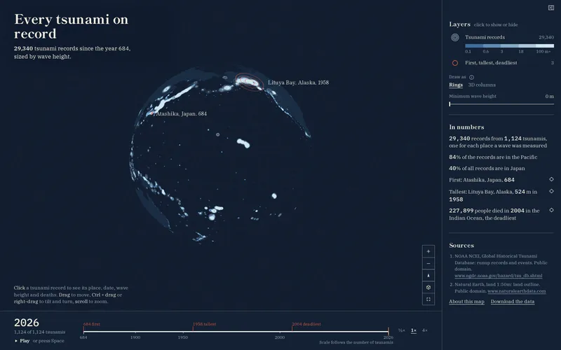
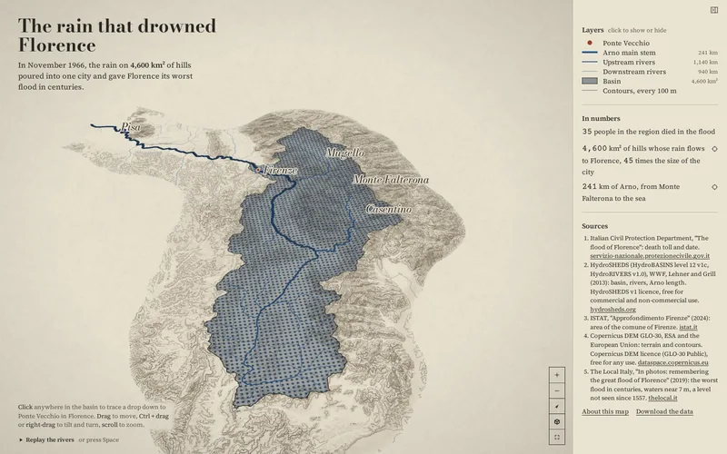

-

The roads of the Roman Empire
299,171 km of Roman road, reaching from Britain to Egypt.
-

Every tsunami on record
29,340 tsunami records since the year 684, sized by wave height.
-

The rain that drowned Florence
The 4,600 km² of hills whose rain all drains under Ponte Vecchio, the basin that flooded Florence on 4 November 1966, as a 3D relief map you can tilt and trace.